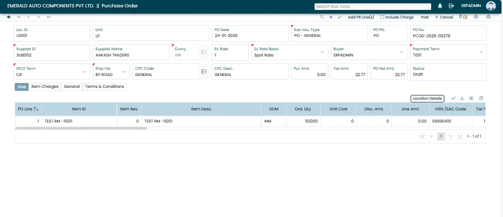

<div data-category="Purchase Order" data-title="Purchase Order Cancellation" data-updated="December 01, 2025" data-contributors="RoadmapIT" data-breadcrumb="Home,Purchase Order,Purchase Order Cancellation">
  <div class="page-content">
    <p>The Purchase Order Cancellation screen is used to cancel purchase orders that are in New or Entry Completed status. By utilizing the "Cancel" button, the status of the purchase order will be updated to 'Cancelled'. Additionally, stocks related to the cancelled items will be adjusted accordingly in the system.</p>

    <h5>Navigation path:</h5>
    <p class="fs-6">Supply Chain \ Purchasing \ Transaction \ Purchase Order</p>

    

    <ul style="list-style-type: none; align-content: center">
      <li class="mouse-icon">In this screen, the purchase order can be cancelled in ‘Draft’ status Document.</li>
      <li class="mouse-icon">The Document can be cancelled using the Cancel button in the header and the line items of the document can be cancelled using the delete action button in the Line.</li>
      <li class="mouse-icon">After Cancel the document, the document status will be updated as cancelled.</li>
      <li class="mouse-icon">Cancelled PO items will be showing Pending RFQ or Pending PR screen.</li>
    </ul>
  </div>
</div>
